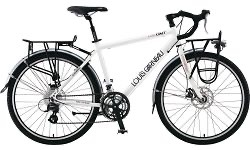

Bike
Louis Garneau 2007 LGS- GMT Touring Bike
Size : 470mm Weight : 15.4kg Frame : LG 6061 ALUMINUM
Derailleur : SHIMANO Brake : TEKTRO ROAD MECHANICAL DISC BRAKE
Front packs
A pair of packs, waterproof in case it rains, and easy to organize and store.
The packs in front mainly contains: maps, tent, ponchos, personal hygene equipments, and chargers.
Rear packs
A pair of packs, similar to the front pair, except being slight larger.
Rear packs mainly contains: clothes, laptop, spare parts, tools, cooking equipments, etc.
Front rack pack
Louis Garneau PROFILE 3 RACK BAG
Originally designed for the rear rack, but since I am putting sleeping bag and pads, and is full.
So I decided to put it on the front rack. It also provides easy access to some items that I would use most frequent, such as camera.
Inner Tube
Inner tube is 26C spec with Shrader valve. It's pretty common and should be easier to find.
General I would carry 6 to 8 spare inner tubes, I would patch it whenever possible, so the tubes would last as long as possible.
I also have tubes made by Continental, they have a nice website XD
Tire
Originally it comes with this tire: KENDA 26" X 1.75. However, with the heavy load, the tire gets worn out pretty fast.
Estimating with the current road condition, about every 4,000 to 5,000 KM, I would need to replace the tires.
The spare tire is bade by VREDESTEIN, it can be folded for smaller storage.
Pump
It can be attached to the bike frame, comes with pressure gauge, and with a little foot petal so I can pump the bike with ease.
I had to pump the tires to maximum pressure pretty often, especally after the tires goes flat ~_~
It's also easier and smoother to ride after I pump the tires. It's easy to carry the pump because of its tube shape, if needed, it can also be used as a weapon.
Water Bottle / Water Pack
Three water bottles, each holds 650cc, placed on the bike. Water pack can also hold 3,000cc of water.
This should last for more than half a day, and refill them depending on the situation.
Tools
Multiple tools kit: Made by SYNPOWELL. BT-16
Bike Lock
Never leave your bike, that's the rule of thumb.
Even though I always put the bike to where I can see it easily, but carrying the lock also makes me feel better.